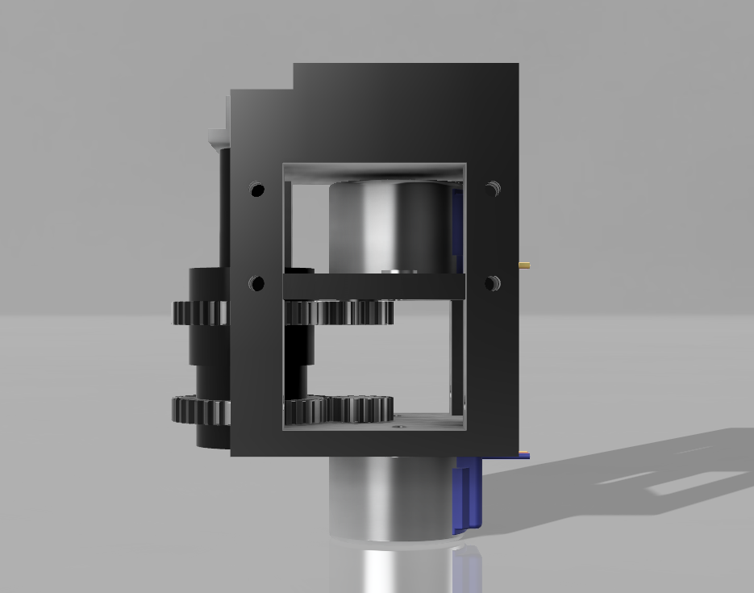
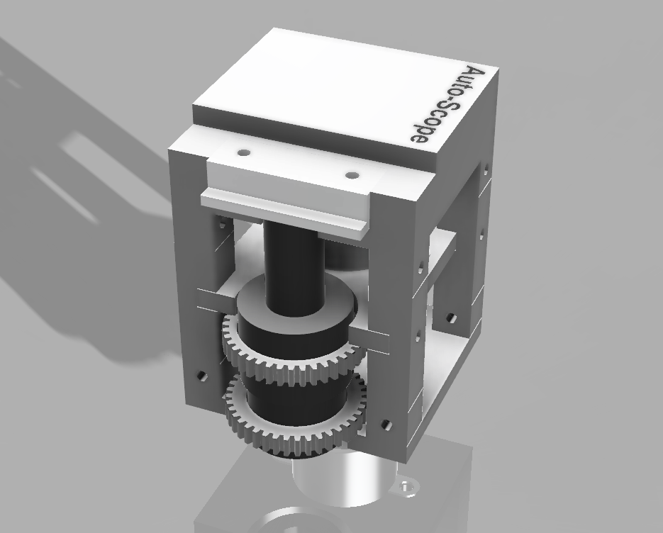

Auto-Scope - Stage Driver V1
I finished the stage driver prototype for our programmable microscope project: Auto-Scope.
The design is pretty simple; there are two mounting points on the stage that I chose to use to support the unit. The unit is designed to be modular for easy printing and upgrading. I had to print a few parts along the way while I iterated on the design, but it's now looking pretty good. The final design is currently printing on my CR-10 and will hopefully come out as depicted above. Once it's assembled the real fun (aka the Python) can start!
UPDATE: 19/8/18
The print has finished, and I've assembled the stage driver unit onto my OMAX microscope (see below). Overall I'm happy with the design. However, there are a few changes I'd like to make in V2.
- The text on the top of the unit didn't work, possibly because the top section is printed upsidedown?
- I accounted for a 0.1mm gap in the joint design; however it did require some sanding to get them fitting nicely.
- Although the assembled unit is small, it's not small enough. Currently, you have to remove the microscope base to attach it.
- Lots of screws...